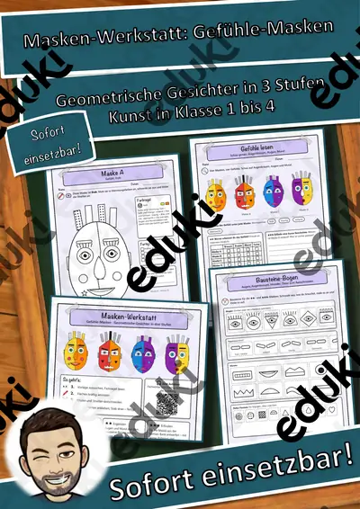
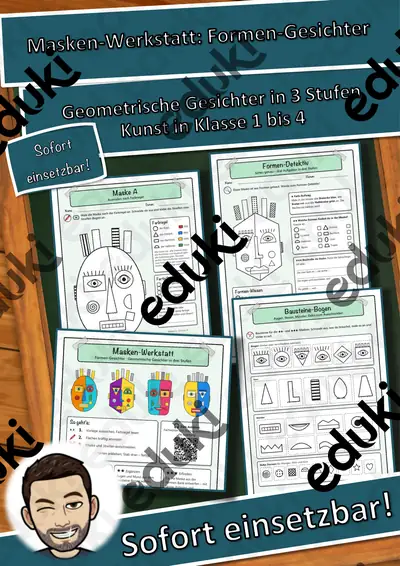
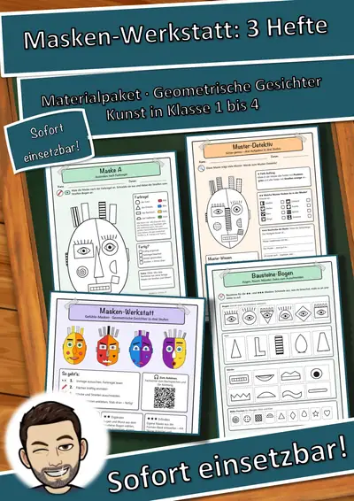
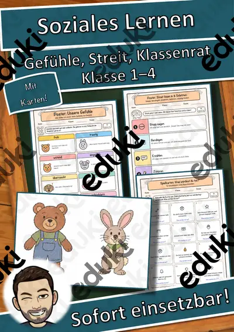

Lesespur: Masken gestalten: Gesichter verwandeln – Lesespurgeschichte mit Rätseln (Klasse 5)
Masken gestalten – Gesichter verwandeln – Lesespurgeschichte Kunst (Klasse 5)Begib dich mit deiner Klasse auf eine spannende Lesespur durch eine Masken-Werkstattwoche! Jara und Fiete bereiten sich in der Jugendkunstschule auf den Faschingsumzug vor: Im Theaterraum erfahren sie, warum schon im alten Griechenland Masken getragen wurden, in der Schnitzstube, wie man in den Alpen mit Holzmasken den Winter vertreibt, im Venedigsaal, warum man beim Karneval unerkannt feierte. Im Spiegelzimmer entdecken sie, wie Übertreibung Gefühle sichtbar macht, in der Kleisterküche die Pappmaché-Technik, im Malatelier den Unterschied zwischen symmetrisch und asymmetrisch. Auf der Bühne erleben sie schließlich, wie sehr eine Maske verwandelt. Ihre kleine Pappmaché-Maske Maski ist immer dabei. Am Ende jedes Abschnitts verrät ein Hinweis den nächsten Raum auf dem Hausplan – nur wer richtig liest und mitdenkt, findet den Weg und sammelt alle geheimen Buchstaben zum Lösungswort.
Die perfekte Lesespur für den KUNSTUNTERRICHT der 5. Klasse – ideal in der Faschingszeit und als Einstieg in ein eigenes Masken-Projekt: Sie verbindet motivierendes, sinnentnehmendes Lesen mit Gestaltungswissen und einer Schritt-für-Schritt-Technik – und schult zugleich das genaue Arbeiten. Das Material ist SOFORT EINSETZBAR und in DREI DIFFERENZIERUNGSSTUFEN (leicht ★ / mittel ★★ / schwer ★★★) angelegt.WICHTIG: Das komplette Material ist sowohl in FARBE als auch in SCHWARZ-WEISS enthalten – ideal zum Sparen von Druckkosten.DAS IST ENTHALTEN
- Lesespurgeschichte in 3 Niveaus (leicht, mittel, schwer)
- farbiger Hausplan als Suchkarte
- Hörverstehen mit QR-Code zur MP3 (selbstständiges Hören mit Kopfhörern)
- vier Aufträge auf dem Weg: ein Zuordnungs-Rätsel, ein Quiz, eine Rechenaufgabe und ein Steckbrief
- Rätselseite (Wörter-Suchsel + Wissensfragen)
- Ausmalbild zum Thema
- ausführliches Lösungsblatt für die Lehrkraft
- alles zusätzlich als komplette Schwarz-Weiß-VarianteSO GEHT DIE LESESPURDie Jugendlichen lesen ab START, entnehmen dem Text einen Hinweis auf einen Raum der Kunstschule, suchen ihn auf dem Plan und lesen bei dieser Station weiter. An jeder richtigen Station gibt es einen Sammelbuchstaben. Eingebaute Sackgassen (Garderobe, Kostümlager, Hausmeisterraum, Pausenhof) gehören zwar zur Kunstschule, sind aber keine Stationen und dienen der Selbstkontrolle. Am Ende werden die gesammelten Buchstaben umgestellt und ergeben ein geheimes Lösungswort. (Die Lösungen sind selbstverständlich nur im Lösungsblatt für die Lehrkraft enthalten.)INHALTLICHER SCHWERPUNKTDie Jugendlichen lernen verschiedene Aufgaben von Masken kennen – im Theater des alten Griechenland, bei der alpenländischen Fastnacht, beim Karneval in Venedig und als Schutzmaske. Sie untersuchen, wie Übertreibung von Augen, Brauen und Mund Gefühle sichtbar macht, lernen die Pappmaché-Technik in Arbeitsschritten kennen, vergleichen symmetrische und asymmetrische Gestaltung und denken darüber nach, wie eine Maske die Wirkung einer Person verändert.ABGEDECKTER LEHRPLAN (Klasse 5, Kunst)
- Kunst (LehrplanPLUS Bayern) – Klasse 5 „Plastisches Gestalten“: Funktionen von Masken kennen, Ausdruck durch Übertreibung und Symmetrie untersuchen, die Pappmaché-Technik in Arbeitsschritten anwenden und die Wirkung einer Maske beim Tragen reflektieren.
- Deutsch – Lesen mit Texten und Medien umgehen: Lesestrategien anwenden, Texten gezielt Informationen entnehmen, sinnentnehmend und selektiv lesen; Zuhören: einem Sachhörtext konzentriert folgen (Hörverstehen mit MP3).
- Mathematik – Rechnen im Sachzusammenhang.
- Fächerübergreifend / Kompetenzen: Brauchtum und Feste, Theater, genaues Lesen und Prüfen, kreatives Gestalten (Ausmalbild).
Geeignet für Freiarbeit, Stationenlernen, Vertretungsstunden, Wochenplan, Projekttage und Homeschooling. Klassenstufe 5 (differenziert einsetzbar auch in Klasse 6).
Ähnliche Materialien

Masken-Werkstatt Gefühle-Masken – Geometrische Gesichter in 3 Stufen (Kunst, Klasse 1–4, Vorlagen + Bausteine)

Masken-Werkstatt Muster-Masken – Geometrische Gesichter in 3 Stufen (Kunst, Klasse 1–4, Vorlagen + Bausteine)

Masken-Werkstatt Formen-Gesichter – Geometrische Gesichter in 3 Stufen (Kunst, Klasse 1–4, Vorlagen + Bausteine)

Masken-Werkstatt Materialpaket: 3 Hefte – Geometrische Gesichter in 3 Stufen (Kunst, Klasse 1–4, Vorlagen + Bausteine)

Alpen Lückentext mit Wortspeicher Hörverstehen und Suchsel

Lesespur: Expressionismus: Farbe als Gefühl – Lesespurgeschichte mit Rätseln (Klasse 10)

Soziales Lernen – Gefühle, Streit lösen, Klassenrat: Heft mit Postern und Karten Kl. 1–4